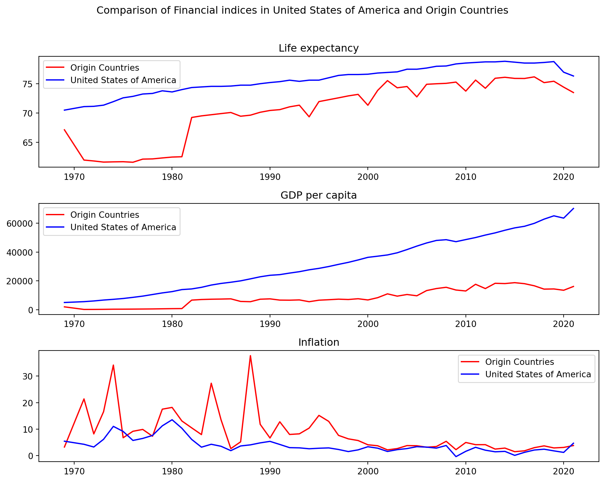

| Title | Age range |
|---|---|
| children | 0-14 |
| young adult | 15-39 |
| middle_age adult | 40-59 |
| old adult | +60 |
Europe
Asia
Northern America
is an economic metric that breaks down a countrys economic output per person and as an
economic growth index can have an affect on attracting people from all around the world to
the countries which have high GDP.
Cost of Living, Wage Levels and Economic Stability and Low inflation in a destination country
can indeed serve as an absorbing factor for migrants
Healthcare, Retirement and Quality of Life and a healthier and potentially more productive
workforce. So, Lower life expectancy in origin countries could be a push factor for
migration.

Based on our plots in our desired countries, we can see:
Life expectancy is on a steady rise, though occasional fluctuations occur in the origin country.
Destinations GDP sees a significant and consistent increase, while in the origin countries, it remains consistently low.
Similarly, both the Destination and the origin countries experience generally low and stable inflation, punctuated by occasional fluctuations.
In general, it seems GDP per capita is an important financial factor in immigration and Emigration